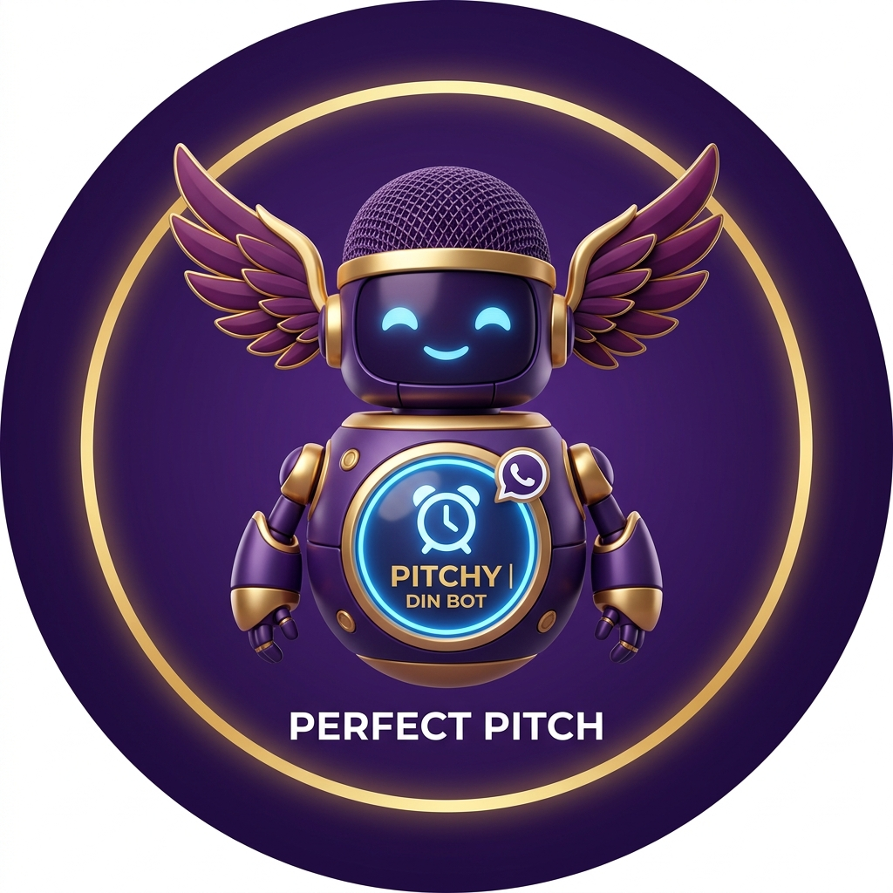

Markedsvalidering · Mars 2026
100+ solgte billetter
& vi imponerte stort!
Vår debutreise beviste at det er plass til et kor som snakker gründerens språk.
Øvelser 2026
14
Hittil (5 gjenstår)
Medlemmer
23
+ 2 dirigenter
Debut-impact
100+
Billetter solgt
Vannhull
~75k
NOK på Skyggesiden
Innsikt: N=16
Commitment
88% ønsker Runway-regelen
14 av 16 støtter 80% oppmøtekrav for å sikre musikalsk kvalitet.

Øvingsfrekvens
Øvelseslengde (2 timer)
Opptaksordningen
Hvem skal få bli med?
Flertallet ønsker gründer-mindset som eneste krav.
Bidra i styret?

Strategisk synlighet
"De korer om det harde gründerlivet"
Omtalen i Shifter bekrefter at Perfect Pitch fyller et viktig tomrom i oslo-økosystemet.
Les saken hos Shifter →A Founder's Requiem – 11. mars 2026


Repertoar & Sangbank
🏆 The Keepers
Rangert etter popularitet · 15 av 16 respondenter stemte · flervalg
🎸 Sangforslag til neste konsert
💬 Idé: kjønnsdelt tekst – jentene synger gründerperspektiv, gutta VC-perspektiv.
Hva mener dere?
Etter konserten
"Dette var helt amazeballs! Dere imponerte stort, og jeg storkoste meg i selskap med så mange fantastiske gründere."
Camilla Næristorp · Founder
Etter konserten
"Takk for en fortryllende aften! Gleder meg til mer!"
Børge Strand-Bergesen · Hard-Tech CTO
Etter konserten
"Som vi koste oss! Takk for konsert og utrolig fin historie om gründerreisen!"
Ekaterina Yurchenko · Founder Walk
"Gründerlivet kan være utrolig gøy. Og tidvis veldig, veldig ensomt. Koret gir meg et safe space hvor jeg kan være både ambisiøs og et menneske fullt av feil på samme tid."
Kristin Lorange · Gründer, Kok
"Og TUSEN takk til deg som har gründet dette koret til oss! Jeg gleder meg til fortsettelsen!"
Karianne Hartviksen · Foreleser
"Rå opplevelse! Gleder meg til fortsettelsen!"
Aleksandra Toniak · Alt
Veien hit
🚀 Perfect Pitch stiftes
Merete sender én melding – ingen plan, ingen lokale, bare en klar idé. Klassisk gründerlogikk.
🎵 Første øvelser på Pakkhuset
Annenhver tirsdag 17–19. Dirigent Silje tar styringen. Første sanger plukkes ut.
🌱 Koret vokser og finner sin form
Fast gjeng etableres. Repertoaret bygges opp, fellesskapet dypner seg, og Skyggesiden blir en institusjon.
💪 Laget styrkes ytterligere
Nye stemmer inn, konsertforberedelser starter for alvor. 23 medlemmer + 2 dirigenter.
📰 Omtalt i Shifter + åpen korøvelse
«De korer om det harde gründerlivet» publiseres like før konserten. Åpen korøvelse 23. mars gir 3 nye medlemmer.
🎤 Debutkonsert: A Founder's Requiem
Pakkhuset Oslo. 100+ solgte billetter. 13 sanger. Stående applaus.
📋 Survey, vedtekter & styrebygging
16 respondenter svarer. Vedtekter vedtas. Fire vil sitte i styret.
🎙️ Ny åpen korøvelse
Neste mulighet for nye stemmer til å bli med. Spesielt søkes sopraner og basser.
🎹 Neste konsert: «The Pivot»
Dato TBD. Nytt kapittel. Ny scene.

Vår digitale korbevarer
Under arbeid 🔧Møt Pitchy
Pitchy skal passe på at vi møter opp i Choirmate, holder styr på fraværet, og sørger for at WhatsApp-gruppen forblir en sone for sangglede – ikke påminnelser. Mer kommer!